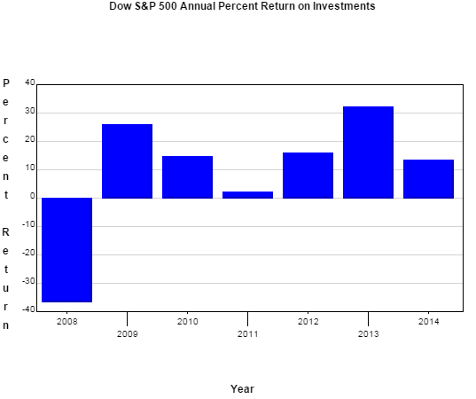
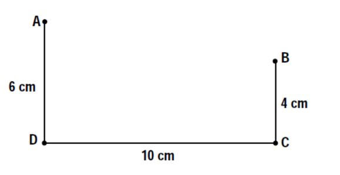

MATH 1830 Homework
Mary Monroe-Ellis
Susan Mosteller
Unit 3 Applications of Derivatives
3.1 Analyzing and Interpreting Graphs
Homework
Analyze for the following function and interpret the results.
Using data from the Federal Reserve, the Dow S&P 500 annual percent return on investments for the years 2008-2014 can be modeled by the following equation: $$A(t) = - 1.64{t^4} + 20.85{t^3} - 86.05{t^2} + 127.87t - 36.24$$ where t is in years since 2008 and A(t) is in percent.
Source: http://pages.stern.nyu.edu/~adamodar/New_Home_Page/datafile/histretSP.html
- Analyze $A(t)$
-
Identify the domain of $A(t)$
Domain: The interval $\left[ {0,6} \right]$
The variable t is in 'years since 2008'. The model was developed for the years 2008-2014.
-
Identify x-intercepts and y intercepts of $A(t)$
Evaluate and interpret any x intercepts of $A(t)$
$0 = - 1.64{t^4} + 20.85{t^3} - 86.05{t^2} + 127.87t - 36.24$
Using a graphing calculator, identify any zeros in the domain.
One x intercept identified in the domain
$(0.3656,0)$
Sometime in the year 2008, returns reached 0%
Evaluate and interpret the y intercept of $A(t)$.
$A\left( 0 \right) = - 1.64{\left( 0 \right)^4} + 20.85{\left( 0 \right)^3} - 86.05{\left( 0 \right)^2} + 127.87\left( 0 \right) - 36.24 = - 36.24$
$(0,-36.24)$
The annual percent return on investments in 2008 was -36.24%
-
Identify any vertical asymptotes and holes in $A(t)$
There are no vertical asymptotes or holes. The function is a polynomial.
-
Identify any horizontal asymptotes in $A(t)$
There are no horizontal asymptotes. The function is a polynomial.
-
- Analyze ${A}'\left( t \right)$
${A}'\left( t \right)=-6.56{{t}^{3}}+62.55{{t}^{2}}-172.10t+127.87$
-
Graph the critical numbers on a number line and determine the sign for each interval.
Values of t where ${A}'\left( t \right)=0$.
$0=-6.56{{t}^{3}}+62.55{{t}^{2}}-172.10t+127.87$
${A}'\left( t \right)=0$ when $t\approx 1.20$, $t\approx 3.10$, $t\approx 5.23$
Values of t where ${A}'\left( t \right)$ is undefined.
There are no values of t where ${A}'\left( t \right)$ is undefined.
Values of t where ${A}\left( t \right)$ is undefined.
There are no values of t where ${A}\left( t \right)$ is undefined.
Separate into intervals using: $t=1.20$, $t=3.10$ and $t=5.23$.

Sign graph of ${A}'(x)$ from left:
positive, ${A}'\left( 1.20 \right)\approx 0$, negative, ${A}'\left( 3.10 \right)\approx 0$, positive, ${A}'\left( 5.23 \right)\approx 0$, negative
-
Determine the intervals on which $A(t)$ is increasing/decreasing
The function is increasing on the intervals: $\left( 0,1.20 \right)\cup \left( 3.10,5.23 \right)$
APR increased from 2008 into 2009 and from 2011 into 2013.
The function is decreasing on the intervals: $\left( 1.20,3.10 \right)\cup \left( 5.23,6 \right)$
APR decreased from 2009 into 2011 and in 2013.
Identify local maxima and minima for $A(t)$.
There are two Local Maxima at the points: $\left( 1.20,25.92 \right)$ and $\left( 5.23,34.50 \right)$
There is a Local Minimum at the point: $\left( 3.10,2.90 \right)$
-
- Analyze ${A}''\left( t \right)$
${A}''\left( t \right)=-19.68{{t}^{2}}+125.1t-172.10$
-
Graph the critical numbers on a number line and determine the sign for each interval.
Values of t where ${A}''(t)=0$
$t \approx 2.013$ and $t \approx 4.343$
Values of t where ${A}''\left( t \right)$ is undefined.
There are no values of t where ${A}''(t)$ is undefined.
Values of t where $A\left( t \right)$ is undefined.
There are no values of t where $A\left( t \right)$ is undefined.
Separate into intervals using: $t=2.013$ and $t=4.343$.

Sign chart for ${A}''\left( t \right)$ reading left to right:
negative, ${A}''\left( 2.013 \right)\approx 0$ , positive, ${A}''\left( 4.343 \right)\approx 0$, negative
-
Determine the intervals on which $A(t)$ is concave up / concave down
On what intervals is A(t) concave up? Interpret these results.
The function is concave up on the interval: $\left( 2.013,4.343 \right)$
On the interval $\left( 2.01,3.10 \right),$ the annual percent return on investments is decreasing at a decreasing rate each year.
On the interval $\left( 3.10,4.34 \right),$ the annual percent return on investments is increasing at an increasing rate each year.
On what intervals is $A(t)$ concave down? Interpret these results.
The function is concave down on the intervals: $\left( 0,2.013 \right)\cup \left( 4.343,6 \right)$
On the intervals from $\left( 0,1.2 \right)\,\text{and}\,\left( 4.34,5.23 \right),$ the annual percent return on investments is increasing at a decreasing rate each year.
On the interval $\left( 3.10,4.34 \right),$ the annual percent return on investments is decreasing at an increasing rate each year.
Identify points of inflection for $A(t)$. Interpret these results.
There are two points of inflection:
$\left( 2.013,15.618 \right)$ and $\left( 4.343,20.557 \right)$
According to the model, the annual percent return on investments was changing most rapidly at $t \approx 2.01$ and $t \approx 4.34$ (in years after 2008).
-
- Graph $A(t)$
Clearly marking the characteristics identified above. Use graphing paper and colored pencils. Your graph should cover an entire piece of graph paper.

-
In order to accurately use the model, t values should be interpreted discretely, since the data used was given in discrete values (2008, 2009, etc) Using only discrete values for years, identify the relative maximums and minimums from the function:
Maximum APR’s were in 2009 and 2013. The minimum APR was in 2011.
Note: Because 2008 is included in our domain, the actual minimum APR for the years 2008 through 2014 was in 2008. See the graph of the function. This minimum occurs at an endpoint of the domain interval and will be covered in detail when we explore absolute maximum and absolute minimum in a later lesson.
Verify your maximum and minimum values with the Federal Reserve data for the Dow S&P 500 annual percent return on investments:
Year S&P 500 2008 -36.55% 2009 25.94% 2010 14.82% 2011 2.10% 2012 15.89% 2013 32.15% 2014 13.48%
3.2 Analyzing and Interpreting Graphs part 2
Group Work
Analyze the following function.
Using data from Statista, the total annual amount spent on the purchase of golf equipment in the United States for the years 2008-2014 can be modeled by the following equation:
$$A(t)=-31.94{{t}^{3}}+301.16{{t}^{2}}-665.61t+3454.63$$ where t is in years since 2008 and A(t) is in millions of dollars
Source: http://www.statista.com/statistics/201038/purchases-of-golf-equipment-in-the-us-since-2007/
- Analyze $A(t)$
-
Identify the domain of $A(t)$
Domain: The interval $\left[ 0,6 \right]$
The variable t is defined as 'years since 2008'. This model was developed for the years 2008-2014.
-
Identify x-intercepts and y intercepts of $A(t)$
Evaluate and interpret any x intercepts of $A(t)$
$0=-31.94{{t}^{3}}+301.16{{t}^{2}}-665.61t+3454.63$
Using a graphing calculator, identify any zeros in the domain.
There are no x-intercepts identified in the domain.
The total amount spent in the US on the purchase of golf equipment never fell to $0.
Evaluate and interpret the y intercept of $A(t)$.
$A\left( 0 \right)=-31.94{{\left( 0 \right)}^{3}}+301.16{{\left( 0 \right)}^{2}}-665.61\left( 0 \right)+3454.63=3454.63$
$(0,3454.63)$
In 2008, the total amount spent on golf equipment in the United States was approximately \$3454.63 million dollars.
-
Identify any vertical asymptotes and holes in $A(t)$
There are no vertical asymptotes or holes. The function is a polynomial.
-
Identify any horizontal asymptotes in $A(t)$
There are no horizontal asymptotes. The function is a polynomial.
-
- Analyze ${A}'\left( t \right)$
${A}'\left( t \right)=-95.82{{t}^{2}}+602.32t-665.61$
-
Graph the critical numbers on a number line and determine the sign for each interval.
Values of t where ${A}'\left( t \right)=0$.
$t=1.43$ and $t=4.86$
Values of t where ${A}'\left( t \right)$ is undefined.
There are no values of t where ${A}'\left( t \right)$is undefined.
Values of t where ${A}\left( t \right)$ is undefined.
There are no values of t where $A\left( t \right)$ is undefined.
Separate into intervals using: $t=1.43$ and $t=4.86$.

Sign chart for ${A}'\left( t \right)$ reading left to right:
negative, ${A}'\left( 1.43 \right)\approx 0$, positive, ${A}'\left( 4.86 \right)\approx 0$, negative
-
Determine the intervals on which $A(t)$ is increasing/decreasing
The function is increasing on the interval: $\left( 1.43,4.86 \right)$
From 2009 to 2012, purchase amounts of golf equipment in the US increased each year.
The function is decreasing on the intervals: $\left( 0,1.43 \right)\cup \left( 4.86,6 \right)$
In 2008 into 2009 and in 2013 and 2014, purchase amounts of golf equipment decreased.
Identify local maxima and minima for $A(t)$.
There is a Local Maximum at the point: $\left( 4.86,3666.61 \right)$
There is a Local Minimum at the point: $\left( 1.43,3025.25 \right)$
-
- Analyze ${A}''\left( t \right)$
${A}''\left( t \right)=-191.64t+602.32$
-
Graph the critical numbers on a number line and determine the sign for each interval.
Values of t where ${A}''(t)=0$
$t\approx 3.14$ years since 2008
Values of t where ${A}''\left( t \right)$ is undefined.
There are no values of t where ${A}''(t)$ is undefined
Values of t where $A\left( t \right)$ is undefined.
There are no values of t where $A\left( t \right)$ is undefined
Separate into intervals using: $t=3.14$.

Sign chart for ${A}''\left( t \right)$ reading left to right: positive, ${A}''\left( 3.14 \right)\approx 0$, negative
-
Determine the intervals on which $A(t)$ is concave up / concave down
On what intervals is $A(t)$ concave up? Interpret these results.
The function is concave up on the interval: $\left( 0,3.14 \right)$
When interpreting concavity results, we will segment the interval $\left( 0,3.14 \right)$ into sections based on increasing/decreasing behavior of $f(x)$.
On the interval from $\left( 0,1.43 \right)$ the amount spent annually was decreasing at a decreasing rate. On the interval from $\left( 1.43,3.14 \right)$, the amount spent each year was increasing at an increasing rate.
On what intervals is $A(t)$ concave down? Interpret these results.
The function is concave down on the intervals: $\left( 3.14,6 \right)$
On the interval from $\left( 3.14,4.86 \right)$ the amount spent annually is increasing at a decreasing rate. From $\left( 4.86,6 \right)$ the amount spent each year was decreasing at an increasing rate.
Identify points of inflection for A(t). Interpret these results.
There is a point of inflection at $t=3.14$ years since 2008.
$A\left( 3.14 \right)=-31.94{{\left( 3.14 \right)}^{3}}+301.16{{\left( 3.14 \right)}^{2}}-665.61\left( 3.14 \right)+3454.63\approx 3345.1$
The actual rate of change on spending at $t=3.14$ years since 2008 is:
${A}'\left( 3.14 \right)=-95.82{{\left( 3.14 \right)}^{2}}+602.32\left( 3.14 \right)-665.61\approx 280.93$
According to the model, the amount of money spent on golf equipment was changing most rapidly at x=3.14 (in years after 2008). At that time, the annual amount spent was increasing at a rate of \$280.93 million per year and the total amount spent was $3345.1 million.
-
- Graph $A(t)$
Clearly marking the characteristics identified above. Use graphing paper and colored pencils. Your graph should cover an entire piece of graph paper.

-
In order to accurately use the model, t values should be interpreted discretely, since the data used was given in discrete values (2008, 2009, etc) Using only discrete values for years, identify the relative maximums and minimums from the function:

3.4 Introduction to Optimization
Homework
Measure the lengths of the 3 sides before you begin this problem. If the sides of the figure on your paper are not 10 cm, 6 cm, and 4 cm, then redraw the figure with these dimensions. -
Select a point $E_1$ and place it on $\overline{DC}$.
-
Measure the distance $m{\overline{DE}}_1$ to the nearest tenth of a centimeter.
-
Draw ${\overline{AE}}_1$ and ${\overline{BE}}_1$.
-
Measure the total distance $m{\overline{AE}}_1$ and $m{\overline{BE}}_1$.
-
Repeat steps 1 to 4 with four other points. $E_2$, $E_3$, $E_4$, and $E_5$
-
Record your data in the following chart. Two measurements have already been included.
x (cm) d (cm) $m{\overline{DE}}_1 =$ $m{\overline{AE}}_1 +m{\overline{BE}}_1 =$ $m{\overline{DE}}_2 =$ $m{\overline{AE}}_2 +m{\overline{BE}}_2 =$ $m{\overline{DE}}_3 =$ $m{\overline{AE}}_3 +m{\overline{BE}}_3 =$ $m{\overline{DE}}_4 =$ $m{\overline{AE}}_4 +m{\overline{BE}}_4 =$ $m{\overline{DE}}_5 =$ $m{\overline{AE}}_5 +m{\overline{BE}}_5 =$ $m{\overline{DE}}_6 = 0$ cm $m{\overline{AE}}_6 +m{\overline{BE}}_6 = 16.8$ cm $m{\overline{DE}}_7 = 10$ cm $m{\overline{AE}}_7 +m{\overline{BE}}_7 = 15.7$ cm -
Construct a graph of the data in the above chart. Place the measurement $DEn$ on the horizontal axis using the variable $x$. Place the total distance $AEn+BEn$ on the vertical axis using the variable $d$. Be sure to use graph paper and clearly label and scale the axes. Based on your graph, answer the following questions.
- What is the shortest possible distance from point A to B touching DC?
- How far from point D, do you have to go to minimize this distance?
- What type of mathematical function does your graph appear to represent?
Norris, Ken. (1999). Optimization Problems. Retrieved from https://www.stf.sk.ca/portal.jsp?Sy3uQUnbK9L2RmSZs02CjV/Lfyjbyjsxsd+sU7CJwaIY=F
3.5 Modeling Optimization
Homework
Write a mathematical function for each of the following. Be sure to include a properly labeled diagram (if applicable) and variable statements. State the restrictions on the independent variable.-
A rancher wants to build a rectangular pen. The pen is to be divided into two parts using parallel partitions, one for sheep and one for cattle. There is 240 m of fencing available. Express the area of the enclosures as a function of its dimensions.
$A=\left( \frac{240-3x}{2} \right)x$
$A=120x-1.5{{x}^{2}}$
-
A container company is designing on open-top, square-based, rectangular box that will have a volume of 62.5 $cm^3$. Express the surface area of the box as a function of its width.
$V=lwh={{w}^{2}}h$
$62.5={{w}^{2}}h$
$h=\frac{62.5}{{{w}^{2}}}$
$SA=2lw+2lh+2wh$
$SA={{w}^{2}}+2wh+2wh$
$SA={{w}^{2}}+4wh$
$S(w)={{w}^{2}}+4w\left( \frac{62.5}{{{w}^{2}}} \right)$
$S(w)={{w}^{2}}+\frac{250}{w}$
-
An apple farm yields an average of 30 bushels of apples per tree when 20 trees are planted on an acre of ground. Each time 1 more tree is planted per acre, the yield decreases 1 bushel per tree due to the extra congestion. Express the total yield as a function of the number of trees planted.
Yield= (bushels of apples per tree) ( number of trees planted)
x= number of trees planted ABOVE 20 trees
Yield $=(30-1x)(20+x)$
$Y(x)=600+30x-20x-{{x}^{2}} $
$Y(x)=-{{x}^{2}}+10x+600 $
-
A cylindrical soup can has a volume of 355 $cm^3$. Express the surface area as a function of the radius.
$ V=355c{{m}^{3}} $
$ V=355=\pi {{r}^{2}}h $
$ h=\frac{355}{\pi {{r}^{2}}} $
$ SA=2\pi {{r}^{2}}+2\pi rh$
$ S(r)=2\pi {{r}^{2}}+2\pi r\left( \frac{355}{\pi {{r}^{2}}} \right)$
$ S(r)=2\pi {{r}^{2}}+\frac{710}{r}$
$ S(r)=2\pi {{r}^{2}}+710{{r}^{-1}}$
-
A box (with a top) that has a square base has a surface area of 70 $cm^2$. Express the volume as a function of the width.
$SA=2lw+2lh+2wh$
$ SA=2({{x}^{2}}+xh+xh) $
$ 70=2({{x}^{2}}+2xh) $
$ 35={{x}^{2}}+2xh $
$ 35-{{x}^{2}}=2xh $
$ \frac{35-{{x}^{2}}}{2x}=h $
$V=l\cdot w\cdot h$
$ V=x(x)\left( \frac{35-{{x}^{2}}}{2x} \right) $
$ V=\frac{x(35-{{x}^{2}})}{2} $
$ V=\frac{35x-{{x}^{3}}}{2} $
$ V=\frac{35x}{2}-\frac{{{x}^{3}}}{2} $
-
A rectangular pen is to be built with 1200 m of fencing. The pen is to be divided into three parts using parallel partitions. Find a formula for the area of the pen.
$A=l\cdot w$
$A=\left(\frac{1200-4x}2\right)x$
$ A=(600-2x)(x) $
$ A=600x-2{{x}^{2}}$
-
A cylindrical can has a volume of 900 $cm^3$. The metal costs $15.50/cm². Find a formula for the cost of the can in terms of r.
$V=900 cm^3$
$ V=\pi {{r}^{2}}h$
$ 900=\pi {{r}^{2}}h$
$ \frac{900}{\pi {{r}^{2}}}=h$
$SA=2\pi {{r}^{2}}+2\pi rh$
$ S(r)=2\pi {{r}^{2}}+2\pi r\left( \frac{900}{\pi {{r}^{2}}} \right)$
$ S(r)=2\pi {{r}^{2}}+\frac{1800}{r}$
$ C(r)=15.50(SA)$
$ C(r)=15.50\left( 2\pi {{r}^{2}}+\frac{1800}{r} \right)$
$ C(r)=31\pi {{r}^{2}}+\frac{27900}{r}$
-
There are 50 apple trees in an orchard, and each tree produces an average of 200 apples each year. For each additional tree planted within the orchard, the average number of apples produced drops by 5. Find the formula for the number of trees in the orchard.
$ Y(t)=(50+t)(200-5t)$
$ Y(t)=10,000-250t+200t-5{{t}^{2}}$
$ Y(t)=-5{{t}^{2}}-50t+10,000$
-
For an outdoor concert, a ticket price of \$30 typically attracts 5000 people. For each $1 increase in the ticket price, 100 fewer people will attend. Find the revenue formula.
$ R(d)=(5000-100d)(30+1d) $
$ R(d)=150,000+5000d-3000d-100{{d}^{2}} $
$ R(d)=-100{{d}^{2}}+2000d+150,000 $
-
Calculators are sold to students for 100 dollars each. Three hundred students are willing to buy them at that price. For every 5 dollar decrease in price, there are 30 more students willing to buy the calculator. Find the revenue formula.
$ R(d)=(100-5d)(300+30d) $
$ R(d)=30,000+3000d-1500d-150{{d}^{2}} $
$ R(d)=-150{{d}^{2}}+1500d+30,000 $
Norris, Ken. (1999). Optimization Problems. Retrieved from https://www.stf.sk.ca/portal.jsp?Sy3uQUnbK9L2RmSZs02CjV/Lfyjbyjsxsd+sU7CJwaIY=F
3.6 Absolute Maximum and Absolute Minimum
Homework
Find the absolute minimum and maximum values of the function, if they exist, over the given interval.-
$f(x)={{x}^{3}}-3x+6\quad \quad [-1,3]$
$f'(x)=3{{x}^{2}}-3$
$ 3{{x}^{2}}-3=0$
$ {{x}^{2}}=1$
$ x=\pm 1$
$x$ $f(x)$ $-1$ $8$ $1$ $4$ $3$ $24$ In the interval, the function has an Absolute Minimum at the point: $(1, 4)$
In the interval, the function has an Absolute Maximum at the point: $(3, 24)$
-
$y={{x}^{4}}-4{{x}^{3}}\quad \quad [-4,6]$
$y'=4{{x}^{3}}-12{{x}^{2}}$
$ 4{{x}^{3}}-12{{x}^{2}}=0$
$ 4{{x}^{2}}(x-3)=0$
$ 4{{x}^{2}}=0\quad x-3=0$
$ x=0\quad \quad x=3$
$x$ $y$ $-4$ $512$ $0$ $0$ $3$ $-27$ $6$ $432$ In the interval, the function has an Absolute Minimum at the point: $(3, -27)$
In the interval, the function has an Absolute Maximum at the point: $(-4, 512)$
-
$y=\frac{{{x}^{2}}}{3x-6}\quad \quad [3,6]$
$ y'=\frac{\left( 3x-6 \right)(2x)-{{x}^{2}}(3)}{{{\left( 3x-6 \right)}^{2}}} $
$y'=\frac{6{{x}^{2}}-12x-3{{x}^{2}}}{{{\left( 3x-6 \right)}^{2}}}$
$ =\frac{3{{x}^{2}}-12x}{{{\left( 3x-6 \right)}^{2}}} $
$ \frac{3{{x}^{2}}-12x}{{{\left( 3x-6 \right)}^{2}}}=\frac{0}{1} $
$ 3{{x}^{2}}-12x=0 $
$ 3x(x-4)=0 $
$ 3x=0\quad x-4=0 $
$ x=0\quad \quad x=4 $
0 is not in interval.
$x$ $y$ $3$ $3$ $4$ $2.7$ $6$ $3$ In the interval, the function has an Absolute Minimum at the point: $(4, 2.7)$
In the interval, the function has two Absolute Maxima at the points: $(3, 3)$ and $(6, 3)$
-
$y={{(x+2)}^{{}^{2}/{}_{3}}}\quad \quad [-4,-2]$
$ y'=\frac{2}{3}{{\left( x+2 \right)}^{-{}^{1}/{}_{3}}}(1) $
$ y'=\frac{2}{3{{\left( x+2 \right)}^{{}^{1}/{}_{3}}}} $
$ y'=\frac{2}{3\sqrt[3]{x+2}} $
$ \frac{2}{3\sqrt[3]{x+2}}=\frac{0}{1} $
$ 2=0 $
No critical numbers
$x$ $y$ $-4$ $1.59$ $-2$ $0$ In the interval, the function has an Absolute Minimum at the point: $(-2, 0)$
In the interval, the function has an Absolute Maximum at the point: $(-4, 1.59)$
-
Find the absolute minimum and maximum values of the function, if they exist, over the given interval.
- $g(x)=\frac13x^3-2x-2\;\;\;\;\left[-2,3\right]$
$g'(x)=x^2-2$
$ {{x}^{2}}-2=0 $
$ x=\sqrt{2},x=-\sqrt{2} $
$x$ $g(x)$ $-2$ $-.67$ $-1.414$ $-.11$ $1.414$ $-3.89$ $3$ $1$ In the interval, the function has an Absolute Minimum at the point: $(1.414,-3.89)$
In the interval, the function has an Absolute Maximum at the point: $(3, 1)$
- Would your answers in part a change if we considered [-2,2] instead?
$x$ $g(x)$ $-2$ $-.67$ $-1.414$ $-.11$ $1.414$ $-3.89$ $2$ $-3.33$ In the interval, the function has an Absolute Minimum at the point: $(1.414, -3.89)$
In the interval, the function has an Absolute Maximum at the point: $(-1.414, -.11)$
- What if we changed the interval to $-2\le x\le 1$?
$x$ $g(x)$ $-2$ $-.67$ $-1.414$ $-.11$ $1$ $-3.67$ In the interval, the function has an Absolute Minimum at the point: $(1, -3.67)$
In the interval, the function has an Absolute Maximum at the point: $(-1.414, -.11)$
- $g(x)=\frac13x^3-2x-2\;\;\;\;\left[-2,3\right]$
-
The temperature, T, of person during an illness is given by: $$T(t)=-0.1{{t}^{2}}+1.2t+98.6\ \ \ 0\le t\le 12$$ where T = temperature (°F) at time t, in days. Find the maximum value of the temperature and when it occurs.
$ T'(t)=-0.2t+1.2 $
$ -0.2t+1.2=0 $
$ -0.2t=-1.2 $
$ t=6 $
$t$ $T(t)$ $0$ $98.6$ $6$ $102.2$ $12$ $98.6$ In the interval, the maximum temperature of 102.2 degrees occurs on day 6.
-
Technicians working for the Ministry of Natural Resources have found that the amount of a pollutant in a certain river can be represented by $P(t)$ where $t$ is the time (in years) since a clean-up campaign started. At what time was the pollution at its lowest level?
$$P(t)=2t+\frac{1}{162t+1}\quad \quad 0\le t\le 1$$
$ P(t)=2t+{{\left( 162t+1 \right)}^{-1}} $
$ P'(t)=2+\left( -1 \right){{\left( 162t+1 \right)}^{-2}}\left( 162 \right) $
$ P'(t)=2-\frac{162}{{{\left( 162t+1 \right)}^{2}}} $
$ 2-\frac{162}{{{\left( 162t+1 \right)}^{2}}}=0 $
$ 2=\frac{162}{{{\left( 162t+1 \right)}^{2}}} $
$ \frac{2}{1}=\frac{162}{{{\left( 162t+1 \right)}^{2}}} $
$ 2{{\left( 162t+1 \right)}^{2}}=162 $
$ {{\left( 162t+1 \right)}^{2}}=81 $
$ 162t+1=\pm 9 $
$ 162t+1=-9 $
$ t=-\frac{10}{162}=-\frac{5}{81}\text{ (not in the interval)} $
$ 162t+1=9 $
$ t=\frac{8}{162}=\frac{4}{81} $
$t$ $P(t)$ $0$ $1$ $\frac{4}{81} $0.21$ $1$ $2.01$ $\left( \frac{4}{81} \right)(365\; days)=18.02$
The pollution was at its lowest level 18 days after clean up began.
Norris, Ken. (1999). Optimization Problems. Retrieved from https://www.stf.sk.ca/portal.jsp?Sy3uQUnbK9L2RmSZs02CjV/Lfyjbyjsxsd+sU7CJwaIY=F
3.7a Applications of Optimization
Homework
Write a mathematical function for each of the following and solve the problem. Be sure to include a properly labeled diagram (if applicable) and variable statements. State the restrictions on the independent variable.-
A rancher wants to enclose two rectangular areas near a river, one for sheep and one for cattle. There is 240 meters of fencing available. If the area of the pens is to be maximized, what are their dimensions?
$A(x)=\left( \frac{240-3x}{2} \right)x$
$ A(x)=\left( 120-\frac{3}{2}x \right)x$
$ A(x)=120x-\frac{3}{2}{{x}^{2}}$
$ A'(x)=120-3x$
set $ A'=0$ to find the value of x that maximizes the area.
$ 0=120-3x$
$ 3x=120$
$ x=40$
$\text{Width=}\frac{240-3\left( 40 \right)}{2}=\frac{120}{2}=60$
The dimensions of the pens that maximize the area are 60 m x 40 m.
-
A container company is designing on open-top, square-based, rectangular box that will have a volume of 62.5 $cm^3$. Find the dimensions of the box that will minimize the surface area.
$V=lwh={{w}^{2}}h$
$62.5={{w}^{2}}h$
$h=\frac{62.5}{{{w}^{2}}}$
$SA={{w}^{2}}+2wh+2wh$
$SA={{w}^{2}}+4wh$
$S(w)={{w}^{2}}+4w\left( \frac{62.5}{{{w}^{2}}} \right)$
$S(w)={{w}^{2}}+\frac{250}{w}$
$S'(w)=2w-\frac{250}{{{w}^{2}}}$
Set $S'(w)=0$
$0=2w-\frac{250}{{{w}^{2}}}$
$2{{w}^{3}}=250$
${{w}^{3}}=125$
$w=5$
Use $w$ to solve for $h$
$ 62.5={{5}^{2}}h$
$ 62.5=25h$
$ h=2.5$
The dimensions of the box with the minimum surface area are 5 cm x 5 cm x 2.5 cm.
-
An apple farm yields an average of 30 bushels of apples per tree when 20 trees are planted on an acre of ground. Each time 1 more tree is planted per acre, the yield decreases 1 bushel per tree due to the extra congestion. How many trees should be planted to maximize the yield?
Yield= (bushels of apples per tree) ( number of trees planted per acre)
$x$= number of trees planted ABOVE 20 trees
Yield$=(30-1x)(20+x)$
$Y(x)=600+30x-20x-{{x}^{2}}$
$Y(x)=-{{x}^{2}}+10x+600 $
$Y'(x)=-2x+10$
$-2x=-10$
$x=5$
Total trees $= 20+5=25$
Max Yield$=(30-1.5)(20+5)=625$
The yield is maximized to 625 bushels when 25 trees are planted per acre.
-
A cylindrical soup can has a volume of 355 $cm^3.$ Find the dimensions (radius and height) that minimize the surface area of the can.
$ V=355$ $c{{m}^{3}} $
$ V=355=\pi {{r}^{2}}h $
$ h=\frac{355}{\pi {{r}^{2}}} $
$ SA=2\pi {{r}^{2}}+2\pi rh$
$ S(r)=2\pi {{r}^{2}}+2\pi r\left( \frac{355}{\pi {{r}^{2}}} \right)$
$ S(r)=2\pi {{r}^{2}}+\frac{710}{r}$
$ S(r)=2\pi {{r}^{2}}+710{{r}^{-1}}$
$S'(r)=4\pi r-\frac{710}{{{r}^{2}}}$
Set $S'(r)=0$
$4\pi r-\frac{710}{{{r}^{2}}}=0$
$4\pi r=\frac{710}{{{r}^{2}}}$
$\frac{4\pi r}{1}=\frac{710}{{{r}^{2}}}$
$4\pi {{r}^{3}}=710$
${{r}^{3}}=\frac{710}{4\pi }$
${{r}^{3}}=56.5$
$r=3.84$
$h=\frac{355}{\pi {{\left( 3.84 \right)}^{2}}}=7.66$
The surface area of the can will be minimized when the radius is 3.84 cm and the height is 7.66 cm.
-
Find the maximum volume of a box with a square base that has a surface area of 70 $cm^2$.
Assume a lid.
$SA=2lw+2lh+2wh$
$ SA=2({{x}^{2}}+xh+xh) $
$ 70=2({{x}^{2}}+2xh) $
$ 35={{x}^{2}}+2xh $
$ 35-{{x}^{2}}=2xh $
$ \frac{35-{{x}^{2}}}{2x}=h $
$V=l\cdot w\cdot h$
$ V(x)=x(x)\left( \frac{35-{{x}^{2}}}{2x} \right) $
$ V(x)=\frac{x(35-{{x}^{2}})}{2} $
$ V(x)=\frac{35x-{{x}^{3}}}{2}$
$ V(x)=\frac{35x}{2}-\frac{{{x}^{3}}}{2} $
$V(x)=17.5x-0.5{{x}^{3}}$
$V'(x)=17.5-1.5{{x}^{2}}$
$0=17.5-1.5{{x}^{2}}$
$1.5{{x}^{2}}=17.5$
${{x}^{2}}=\frac{17.5}{1.5}$
${{x}^{2}}=11.67$
$x\approx 3.42$
$h=\frac{35-11.67}{2(3.42)}=3.41$
The dimensions of the box that maximize the volume are 3.42 cm x 3.42 cm x 3.41 cm.
The maximum volume is 39.88 $cm^3$
-
A rectangular pen is to be built with 1200 meters of fencing. The pen is to be divided into three parts using parallel partitions. Find the dimensions that will maximize the enclosed area.
$A=lw$
$ A(x)=\left( \frac{1200-4x}{2} \right)(x) $
$ A(x)=(600-2x)(x) $
$ A(x)=600x-2{{x}^{2}}$
$A'(x)=600-4x$
$0=600-4x$
$4x=600$
$x=150$
$ l=\frac{1200-4x}{2} $
$l = 600-2x$
$ l=600-2\left( 150 \right)$
$ l=600-300$
$ l=300$
The maximum area occurs when the overall dimensions of the pen are 150 m x 300 m.
-
A cylindrical can has a volume of 900 cm³. The metal costs $15.50/cm². What dimensions produce a can with minimized cost? What is the cost of making the can?
$V=\pi {{r}^{2}}h$
$ 900=\pi {{r}^{2}}h$
$ h=\frac{900}{\pi {{r}^{2}}}$
$ SA=2\pi {{r}^{2}}+2\pi rh$
$ S(r)=2\pi {{r}^{2}}+2\pi r\left( \frac{900}{\pi {{r}^{2}}} \right)$
$ S(r)=2\pi {{r}^{2}}+\frac{1800}{r}$
$ S(r)=2\pi {{r}^{2}}+1800{{r}^{-1}}$
$ S'(r)=4\pi r-\frac{1800}{{{r}^{2}}}$
$ 0=4\pi r-\frac{1800}{{{r}^{2}}}$
$ \frac{1800}{{{r}^{2}}}=4\pi r$
$ 4\pi {{r}^{3}}=1800$
$ {{r}^{3}}=\frac{1800}{4\pi }$
$ {{r}^{3}} \approx 143.239448$
$ r\approx 5.23\text{ cm}$
$ h=\frac{900}{\pi {{(5.23)}^{2}}}=10.47\text{ cm}$
Minimum Surface Area
$ SA=2\pi {{r}^{2}}+2\pi rh$
$ SA=2\pi {{\left( 5.23 \right)}^{2}}+2\pi \left( 5.23 \right)\left( 10.47 \right)$
$ SA=515.92\text{ }c{{m}^{2}}$
Cost of the can
$ =\$15.50(SA)$
$=\$15.50(515.92)$
$=7996.76$
The minimum surface area occurs when the radius is 5.23 cm and the height is 10.47 cm.
The cost of making the can is \$7996.76.
-
There are 50 apple trees in an orchard, and each tree produces an average of 200 apples each year. For each additional tree planted within the orchard, the average number of apples produced drops by 5. What is the optimal number of trees to plant in the orchard?
Yield=(number of trees)(apples produced per tree)
$ Y(t)=(50+t)(200-5t)$
$ Y(t)=10,000-250t+200t-5{{t}^{2}}$
$ Y(t)=-5{{t}^{2}}-50t+10,000$
$ Y'(t)=-10t-50$
Set $Y'(t)=0$
$ 0=-10t-50$
$ 10t=-50$
$ t=\frac{-50}{10}=-5$
Max Yield when $t=-5$
Number of trees for max yield
$50+1t$
$=50+1(-5)$
$=50-5=45$
Maximum yield
$Y(-5)=10125$
The maximum yield of $10,125$ apples occurs when $45$ trees are planted in the orchard.
-
For an outdoor concert, a ticket price of \$30 typically attracts 5000 people. For each $1 increase in the ticket price, 100 fewer people will attend.
- Find the ticket price that maximizes revenue.
Revenue = (price)(# of people)
$ R(p)=(30+1p)(5000-100p)$
$ R(p)=150,000-3000p+5000p-100{{p}^{2}}$
$ R(p)=-100{{p}^{2}}+2000p+150,000$
$ R'(p)=-200p+2000$
$ 0=-200p+2000$
$ 200p=2000$
$ p=\frac{2000}{200}=10$
Ticket price to maximize revenue $=30+1p$
$=30+1(10)$
$=40$
Maximum Revenue
$R(10)=160000$
The revenue is maximized at $\$160,000$ with a $\$40$ ticket price.
- Will your answer change if the concert area holds a maximum of 1200 people? Explain.
$p$ is defined as the number of $1.00 changes in ticket price.
$R(p)=\left( 30+1p \right)\left( 1200-100p \right)$
$ R(p)=36000-3000p+1200p-100{{p}^{2}}$
$ R(p)=36000-1800p-100{{p}^{2}}$
$ R'(p)=-1800-200p$
$ -1800-200p=0$
$ -1800=200p$
$ -9=p$
Ticket price that maximizes revenue $=30+1p$
$ =30+1\left( -9 \right)$
$ =30-9$
$ =21$
Maximum Revenue
$R(-9)=44100$
With a maximum of 1200 people, the revenue is maximized at $\$44,100$ with a ticket price of $\$21.$
- Find the ticket price that maximizes revenue.
-
Calculators are sold to students for $\$100$ each. Three hundred students are willing to buy them at that price. For every $\$5$ decrease in price, there are 30 more students willing to buy the calculator. What selling price will produce the maximum revenue and what will the maximum revenue be?
x is defined as the number of 5 dollar changes in price.
R=(price per calculator) (# of calculators sold)
$ R(x)=(100-5x)(300+30x) $
$ R(x)=30,000+3000x-1500x-150{{x}^{2}} $
$ R(x)=-150{{x}^{2}}+1500x+30,000 $
$ R'(x)=-300x+1500 $
$ -300x+1500=0 $
$ -300x=-1500 $
$ x=5 $
Selling price to maximize revenue
$ 100-5x $
$ =100-5 (5) $
$ =100-25 $
$ =75$
Selling the calculators for \$75 each will maximize revenue.
The maximum revenue will be
$ R(5)=(100-5(5))(300+30(5)) $
$ =(\$75)(450)$
$=33,750$
The maximum revenue is \$33,750 when the price is $75.
Norris, Ken. (1999). Optimization Problems. Retrieved from https://www.stf.sk.ca/portal.jsp?Sy3uQUnbK9L2RmSZs02CjV/Lfyjbyjsxsd+sU7CJwaIY=F
3.7b In-class Optimization Problems
-
Build a rectangular pen with three interior parallel partitions which divide the enclosure into 4 equal sections. If you have 500 feet of fencing, what dimensions will maximize the total area of the enclosure?
$x = 50 ft$
$y= 125 ft$
$A=6250 ft^2$
The dimensions that maximize the area of the enclosure are 50 ft x 125 ft.
The maximum area is $6250 ft^2.$
-
An open rectangular box with square base is to be made from $48 ft^2$ of material. What dimensions will result in a box with the largest possible volume?
$x = 4 ft$
$y = 2 ft$
$V = 32 ft^3$
The dimensions that maximize the volume of the box are 4 ft x 4 ft x 2 ft.
The maximum volume is $32 ft^3$.
-
A container in the shape of a right circular cylinder with no top has surface area $3 ft^2$ What height h and base radius r will maximize the volume of the cylinder?
$r = .56 ft$
$h = .57 ft$
$V = .56 ft^3$
The volume of the cylinder is maximized when the radius is 1 ft and the height is 1 ft.
The maximum volume is $\mathrm\pi ft^3$.
-
A cylindrical can is to hold $20$ $m^3$ The material for the top and bottom costs $\$10$ per square meter and material for the side costs $\$8$ per square meter. Find the radius r and height h of the most economical can.
$r = 1.47 m$
$h= 2.95 m$
Cost $=\$353.46$
The cost of the can is minimized at approximately $353.46, when the radius is 1.47 meters and the height is 2.95 meters.
-
Construct a window in the shape of a semi-circle over a rectangle. If the distance around the outside of the window is 12 feet, what dimensions will result in the rectangle having largest possible area?
Define r as the radius of the circular portion of the window, x as the length of each of the vertical sides of the rectanglar portion of the window and y as the length of the horizontal side of the rectangular portion of the window.
Note: $y=2r$
$r ≈ 1.68 ft$
$x ≈ 1.68 ft$
$y ≈ 3.36 ft$
$A ≈ 10.08 ft^2$
The dimensions that will result in the largest window area are $r=1.68$ feet for the circular portion and $1.68$ feet x $3.36$ feet for the rectangular portion.
Source: https://www.math.ucdavis.edu/~kouba/CalcOneDIRECTORY/maxmindirectory/MaxMin.html